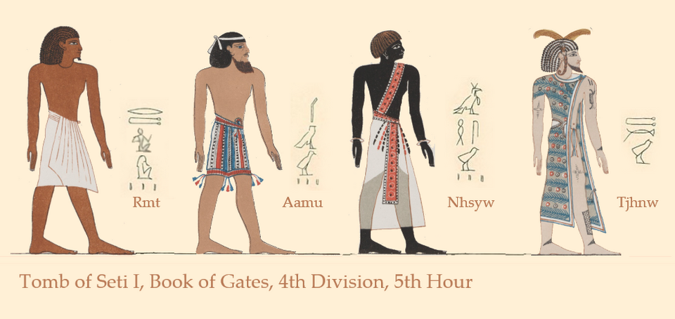

Дуат
«То, что за горизонтом» · не «ад» — двенадцать часов ночи, где рождается солнце

Не «ад», а дорога
Дуат (егип. dwat) — загробный мир за западным горизонтом, куда солнце уходит на ночь, чтобы умереть и вернуться. Это не «ад» и не место наказания, а дорога — путь по двенадцати часам ночи. В древности Дуат «висел» на небе и души вселялись в звёзды; с Среднего царства он стал подземным царством. Первым владыкой Дуата был Анубис, позже — Осирис.
Книги ночи
Путь описали «книги Дуата». «Амдуат» — карта двенадцати часов ночи; с времён Хатшепсут и Тутмоса III её рисовали на стенах царских гробниц. «Книга врат» ведёт через врата, у которых стоят стражи: часовой произносит имя умершего, и тот идёт дальше, только если знает имя стража — «пароль» решает всё. «Литании Ра» восхваляют 75 обликов солнечного бога по дороге к восходу.
Полночь: встреча Ра и Осириса
Каждую ночь по водам Дуата проходит солнечная ладья Месекетту («Та, что спасает»). В полночь случается решающая сцена: Ра встречает Осириса, и из этой встречи рождается новое солнце — восход есть доказательство победы над хаосом. Пройдя суд, царь именовался «тот, кто стал Осирисом».
Огонь, поля и стражи
Внутри Дуата — не одна тьма: там озёра огня, реки и сады, а среди препятствий и стражей проложен путь к полям Иалу, куда попадают оправданные. Пороги и «проклятия» не прихоть: заклинания Текстов саркофагов и Книги мёртвых были «ключами» и паролями, без которых дорога обрывалась.
«Вторая смерть»
У загробного пути — два конца. Праведным — Осирис, поля Иалу и вечная жизнь на них. Провинившимся, провалившим суд или испытания, Дуат готовил «вторую смерть»: сожжение в небытии (Аменти) — полное уничтожение, которое уже не обратить вспять. Какую дорогу человек получит, решали дела при жизни и взвешивание сердца.